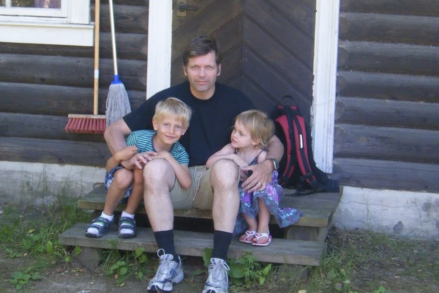

Velkommen til siden min!
Hei! Jeg heter Maria Damhaug jeg er 17 år og går på Nadderud videregående
skole. På fritiden liker jeg å være i aktivitet, lage mat og henge med venner. Jeg går på friidrett
og har gått på dans veldig lenge, men sluttet før sommeren i år.
Jeg bor sammen med moren min og faren min. Storebroren min studerer og har derfor flyttet ut, han
er 21
år og heter Eirik.

Moren min er fra Portugal så jeg er halvt portugisisk og halvt norsk. Hun kommer fra en øygruppe
som heter Azorene, dit reiser vi hver sommer.
Mye av fritiden min går til friidrett, mer av det kan du lese om på interessesiden min.